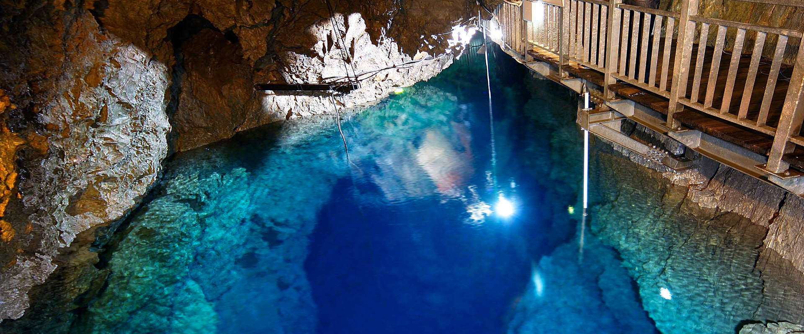
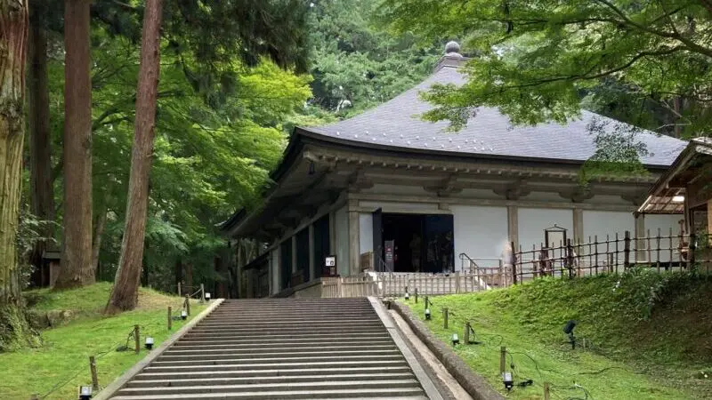
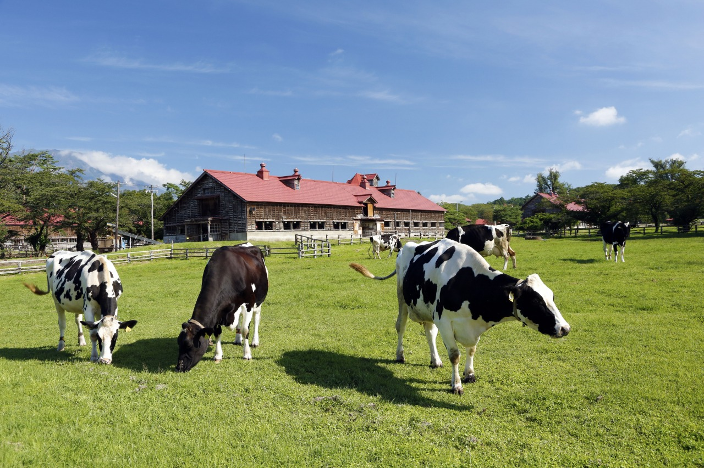

|
日本の岩手県下閉伊郡岩泉町にある鍾乳洞であり、岩泉湧窟とも呼ばれています。総延長約1,200mで、高低差約249mは日本の洞窟中第5位です。秋芳洞・龍河洞と共に「日本三大鍾乳洞」の一つに数えられています。 また、地底湖は龍泉洞地底湖の水として1985年名水百選のひとつに選定されています。 鍾乳洞は、約２億数千万年前の火山島の上に生物の殻が堆積してできた石灰岩が、大陸縁に付加した後、隆起して地上に押し上げられ、長い時間をかけて雨水に侵食されて形成されたものです。 |
 |
|  |
西磐井郡平泉町にある天台宗東北大本山の寺院です。850年に、比叡山の高僧慈覚大師円仁によって開かれたと言われています。 鎌倉時代以降、中尊寺は次第に衰退し、1337年の火災で惜しいことに多くの堂塔、宝物を焼失しました。しかし国宝建造物第１号の金色堂をはじめ、各分野にわたる文化遺産が現在まで良好に伝えられ、東日本随一の平安仏教美術の宝庫と称されています。 2011年に、中尊寺を含む「平泉の文化遺産」が世界文化遺産に登載されました。 |
|
岩手郡雫石町と滝沢市にまたがって所在する日本最大の民間総合農場です。東京都に本社を置く小岩井農牧株式会社が経営しています。 国家公共のため、荒地に農場を拓きたいという井上の高邁な願いに感銘を受けた彌之助は、その場で出資を快諾したといいます。こうして、1891年1月1日、井上が場主となり小岩井農場が開設されました。 小岩井という名前は、小野、岩崎、井上、3人の名字から1字ずつ取って作られたものです |
 |